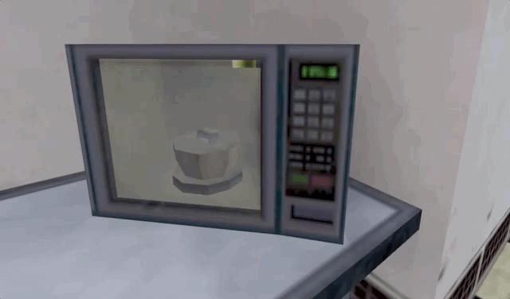

Welcome to the Black Mesa cafeteria
BLACK MESA SUSTENANCE INITIATIVE
Fueling the finest minds in theoretical physics, anomalous materials, and interdimensional exploration since 1989. Whether you're here for a quick coffee before a resonance cascade or a full meal after a long containment breach, we've got you covered.
Today's Special: Magnusson's casserole!
Magnusson’s Casserole – A hearty, no-nonsense dish engineered for maximum sustenance. Featuring layers of tender, slow-cooked meat (exact classification pending), perfectly seasoned potatoes, and a rich, savory sauce infused with just a hint of scientific overconfidence. Developed by Dr. Magnusson himself, this casserole is designed to fuel the mind, fortify the body, and silence the complaints of lesser scientists. Warning: Do not attempt to modify the recipe without proper clearance.
The Black Mesa cafeteria is open 24/7 for your sustenance needs. Exceptions may apply in case of emergencies such as: ressonance cascades, Xen invasions, Nuclear war, anomalous materials spills, rogue AI incidents or in case of microwave casserole spontaneous combustion